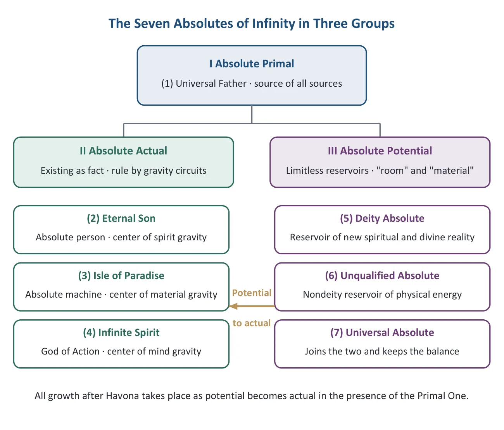
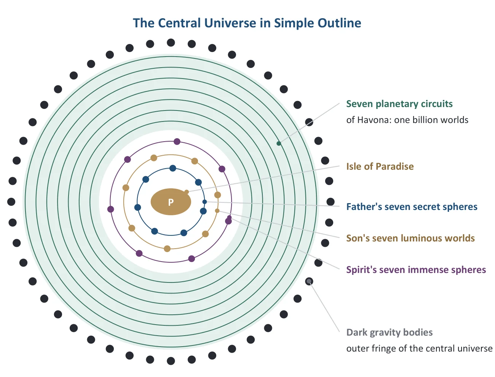

Original : Prologue dans l’éternité · Troisième prologue : le Premier Âge de l’univers (p. 14–22)
Le Premier Âge de l’univers est l’âge de Havona. Il s’est ouvert lorsque les deux Déités existentielles ont trinitisé, acte dont sont issus l’Esprit Infini, Havona et la Trinité du Paradis. À cette aurore, Sadler classe les Sept Absolus de l’Infinité en trois groupes, primordial, actuel et potentiel, et explique la Trinité en la comparant à une société formée par trois personnes. Il décrit ensuite le caractère unique de Havona, une création qui n’a jamais été créée, et présente les Architectes du Maitre Univers, qui étaient déjà à l’œuvre dans cet âge.
Le premier âge actuel de l’univers est l’âge de Havona. On pourrait commencer ici même l’étude du maitre univers, n’était une petite difficulté technique : Havona n’a jamais été créé. Si l’on traite l’éternel Havona comme s’il avait été réellement créé, fait remarquer Sadler, on se trouve face à une question sans réponse : « Quand ? »
Havona, l’univers central, n’est pas une création du temps ; c’est une existence éternelle.12:1.10
Plus loin, il sera commode de traiter Havona comme une création actuelle, mais ici il est classé strictement comme précréatif.
Sadler s’arrête et se retourne vers la fin de l’Âge Zéro pour faire le point. Il y a d’abord les trois Absolus interconnectés, l’Absolu de Déité, l’Absolu Non Qualifié et l’Absolu Universel. Étant des réservoirs sans limites qui contiennent tous les plans futurs de Dieu, ils sont potentiels et sont souvent appelés les Absolus de potentialité. Qu’est-ce donc qui est actuel ? Trois réalités seulement : le Père Universel, le Fils Éternel et le Paradis. Autrement dit, deux Déités existentielles et une base physique à partir de laquelle elles agissent. Sadler juge cet inventaire assez important pour le répéter : à la fin de l’Âge Zéro, l’actuel se compose de deux Déités et d’une base d’opérations, rien de plus.
Ce qui a mis fin à l’Âge Zéro et ouvert le premier âge, c’est un acte de trinitisation des deux Déités existentielles. Sadler emploie ici « trinitisation » pour un acte créatif qui ne se produit qu’une fois, une trinitisation limitée. Les partenaires qui trinitisent versent tout ce qu’ils ont dans cet acte, produisent un être égal à eux-mêmes et sont unis d’une certaine manière. Une telle trinitisation ne peut être répétée.
Par cet acte, quatre choses sont immédiatement ajoutées à l’inventaire de la réalité actuelle ou y sont modifiées. Le Père et le Fils deviennent un en tant que Père-Fils. L’Esprit Infini apparait comme une Déité égale à l’un et à l’autre. Havona, l’univers central, apparait. Et le Père, le Fils et l’Esprit sont unis en tant que Trinité du Paradis. L’Introduction du Livre d’Urantia décrit ces évènements comme un seul groupe.
Coexistants avec la différenciation du Fils d’avec le Père et en présence du Paradis, apparurent la personne de l’Esprit Infini et l’univers central de Havona.0:3.22
À l’aurore du premier âge, l’inventaire se présente donc ainsi : trois Absolus potentiels ; le Père, le Fils et l’Esprit ; l’Ile et Havona ; et la Trinité. Toutes ces réalités sont précréatives ; aucune d’elles n’a jamais eu de commencement actuel ; toutes sont absolument éternelles.
Sadler ajoute que c’est probablement vers ce moment que le Paradis a doté l’Absolu Non Qualifié du potentiel de tous les futurs univers physiques. Cette chronologie est un arrangement propre à Sadler, non une précision du texte.
L’inventaire que Sadler a dressé au « crépuscule » de l’Âge Zéro, il le dresse de nouveau à l’« aurore » du premier âge. Cette fois, il répartit les Sept Absolus de l’Infinité, sept réalités qui sont toutes absolues, en trois groupes. De nombreuses classifications sont possibles, mais il considère celle-ci comme la plus éclairante.
Les sept relations primordiales à l’intérieur du JE SUIS s’éternisent sous l’aspect des Sept Absolus de l’Infinité.105:3.1
Le premier groupe est l’absolu primordial. Dès que l’on essaie de diviser la réalité en actuel et en potentiel, la question se pose de savoir où se place Dieu lui-même. Puisqu’il a tout commencé, il est en un sens antérieur à la fois à l’actuel et au potentiel. Dieu, le Père Universel, est donc mis à part dans un groupe à lui seul. Lui seul est infini au sens plein, la source d’où jaillit toute autre source ; toute réalité, et la personnalité avant tout, vient de lui.
Collectivement, les sept Absolus équivalent à l’infinité, mais le Père Universel lui-même est effectivement infini.105:3.2
Le deuxième groupe est l’absolu actuel, les Absolus d’actualité. On les dit « actuels » parce qu’ils existent pleinement en tant que fait et parce que leurs circuits de gravité universelle gouvernent tout ce qui est actuel par ailleurs. Le Fils Éternel est la personnalité absolue, la source de tout ce qui est spirituel et le centre de la gravité d’esprit. L’Ile du Paradis est la machine absolue, la source de tout ce qui est physique et le centre de la gravité matérielle. L’Esprit Infini, Dieu d’Action et Père-Fils à l’œuvre, est l’origine du mental et le centre de la gravité mentale.
Le troisième groupe est l’absolu potentiel, les Absolus de potentialité. On les dit « potentiels » parce qu’ils sont des réservoirs inépuisables. Ils fournissent la « place » et le « matériau » dont sont faits toute personnalité et tout univers postérieurs à Havona. L’Absolu de Déité est le réservoir d’où émergent de nouveaux êtres et de nouvelles réalités spirituels et divins. L’Absolu Non Qualifié est le réservoir de non-déité de l’énergie physique qui sera organisée en nouveaux univers matériels, en nébuleuses, en soleils et en planètes. L’Absolu Universel relie les deux et maintient tout en équilibre.

Ce que cette classification met en lumière, c’est la relation fonctionnelle qui sous-tend toute croissance et tout changement. Sadler la résume ainsi : toute chose et tout être créés ou évolués après Havona sont venus à l’existence à mesure que la réalité passait du potentiel à l’actuel en présence de Celui qui est primordial. À cet inventaire, outre les sept Absolus, il faut ajouter deux autres réalités existentielles et éternelles : la Trinité du Paradis et Havona, l’univers central.
Qu’est-ce qu’une trinité ? C’est la première chose véritablement nouvelle qui apparait dans cette étude. La Trinité est Déité, mais elle n’est pas une personne. Nous connaissons la Trinité du Paradis comme l’union de Déité du Père, du Fils et de l’Esprit, et nous avons tendance à la concevoir vaguement comme trois personnes qui travaillent ensemble. Sadler insiste cependant sur le fait que la Trinité n’est jamais simplement trois personnes. Elle est réelle en elle-même, quelque chose qui existe indépendamment des trois personnes.
Sadler la compare à une société. Si nous devions donner un nom à l’entreprise fondée par les trois personnes de la Déité, nous pourrions l’appeler « Déité Indivise, Société Anonyme ». Son conseil d’administration compte trois membres : le Père, le Fils et l’Esprit. Réunis en conseil, ils constituent la société ; lorsqu’ils agissent en tant qu’administrateurs, c’est la société qui fonctionne, la Trinité à l’œuvre. Mais lorsque les trois se rencontrent en privé, c’est une réunion de trois personnes, non la Trinité. Un, deux ou les trois peuvent traiter avec la société en tant qu’individus. La comparaison n’est pas de Sadler. Le Livre d’Urantia lui-même emploie la même image, tout en avertissant qu’elle est grossière.
À titre de comparaison grossière, un père, un fils et un petit-fils pourraient former une entité corporative qui serait non personnelle, mais néanmoins sujette à leurs volontés personnelles.10:4.3
Ici aussi, nous devons nous souvenir du mot « simultanément ». Les trois Déités siègent en permanence comme administrateurs de la Trinité tout en travaillant en même temps comme personnes, seules ou ensemble.
La différence entre les Déités en tant que personnes et la Trinité apparait le plus clairement lorsque nous comparons les attitudes. Le Père considère ses créatures avec l’attitude personnelle de l’amour. Du Fils vient la miséricorde, qui est l’amour mis en pratique ; de l’Esprit vient le ministère, qui est la miséricorde à l’œuvre. La Trinité du Paradis, en revanche, a parmi ses fonctions principales l’administration de la justice, une attitude qui appartient collectivement aux Déités et qui est impersonnelle.
| Qui | Attitude ou fonction | Caractère |
|---|---|---|
| Père Universel | Amour | Personnel |
| Fils Éternel | Miséricorde (amour appliqué) | Personnel |
| Esprit Infini | Ministère (miséricorde en action) | Personnel |
| Trinité du Paradis | Administration de la justice | Collectif, impersonnel |
Dieu est amour, le Fils est miséricorde, l’Esprit est ministère…8:4.2
L’application de la loi, la justice, tombe dans le domaine de la Trinité du Paradis, et elle est mise à exécution par certains Fils de la Trinité.10:6.1
Pourquoi une Trinité, et non simplement trois personnes qui travaillent ensemble ou séparément comme il leur plait ? Pourquoi une société plutôt qu’une association ? La réponse de Sadler repose sur la véritable indivisibilité de la Déité. Il ne peut y avoir de trinité que dans la mesure où il y a unité. Grâce à la Trinité, Dieu préserve l’unité de la Déité et jouit en même temps de la communion avec deux égaux. Sadler nous demande d’imaginer un Dieu qui n’aurait personne à qui parler ni personne qui le comprenne vraiment.
Le Livre d’Urantia désigne la Trinité comme le seul évènement inévitable de l’histoire de l’univers.
J’estime que la Trinité était inévitable.10:0.3
Sadler revient maintenant aux diagrammes en cercles du chapitre précédent et rassemble une série d’évènements sous l’intitulé « l’évasion de Dieu hors de l’infinité ». Il estime qu’ils ont tous eu lieu au même « moment ». La Déité est si indivisible qu’elle n’a jamais été réellement divisée, ni dans le temps ni dans l’éternité. La seule manière pour Dieu de se détacher de la Déité Totale était donc de laisser la Trinité du Paradis reprendre, toujours indivise, la présence de Déité qui avait été indivise dans le pré-père.
En séparant la Déité de la non-déité, Dieu échappe d’abord à la condition de remplir toute la réalité. À l’intérieur du cercle avec le point, cependant, il remplit encore toute la Déité. Maintenant, en se séparant du Fils et en produisant l’Esprit avec le Fils, Dieu échappe, en tant que personne, à la condition de remplir toute la Déité et en vient à jouir de la communion avec deux égaux. Trois, comme le note Sadler, est le plus petit groupe social possible. Pourtant, dans la Trinité, les trois Déités préservent l’unité qui remplit et gouverne la Déité Totale, tandis qu’en tant que personnes chacune a une existence indépendante de la Trinité.
LA Trinité Paradisiaque des Déités éternelles permet au Père d’échapper plus facilement à l’absolutisme de personnalité.10:0.1
Sadler y voit une magnifique évasion vers la liberté. C’est l’histoire d’un Dieu si solitaire et si infini qu’il lui était difficile de faire quoi que ce soit, et qui alors fait de la place. Sans la Trinité, Dieu n’aurait pas pu jouir d’une communion personnelle avec le Fils et l’Esprit tout en conservant l’indivisibilité absolue de la Déité et en gouvernant effectivement la Déité Totale et la réalité totale.
Pris ensemble, la Trinité et le Havona parfait nous montrent la perfection en tant que thèse existentielle. Havona donne une forme actuelle à ce qui était potentiel au Paradis. De la Trinité, et des Déités personnelles qui demeurent au Paradis, jaillissent les idéaux de perfection divine, et ces idéaux sont ce que vise finalement toute croissance évolutionnaire à chaque niveau inférieur à l’absolu, c’est-à-dire le fini et l’absonite. Lorsque Havona reparaitra au chapitre 5 comme « thèse de perfection », ce sera dans le prolongement de cet exposé.
Sadler expose ici trois niveaux de réalité. La réalité finie est la réalité de l’espace-temps qui nous est familière. La réalité finie postérieure à Havona est expérientielle et a une origine dans le temps ; elle peut se poursuivre dans l’éternité future, mais elle n’a pas existé depuis l’éternité passée. La réalité absonite est un concept nouvellement introduit par le Livre d’Urantia, une « réalité intermédiaire » entre le fini et l’absolu. On la dit aussi transcendantale : elle transcende le temps et l’espace sans les ignorer. La réalité absolue est sans temps et sans espace. Le temps et l’espace n’entrent même pas dans la conscience des Absolus.
Le niveau absonite de réalité est caractérisé par les choses et les êtres sans commencement ni fin et par la transcendance du temps et de l’espace.0:1.12
Comme exemple d’intemporalité, Sadler cite l’Ajusteur qui avait habité Jésus. Cet Ajusteur, désormais personnalisé, expliqua à Jésus que les armées placées sous son commandement pouvaient être limitées dans l’espace, mais non dans le temps.
Dans ma propre conscience, le temps n’existe pas, et c’est pourquoi je ne peux limiter tes créatures en rien qui s’y rapporte.136:5.4
La réalité absolue est existentielle et éternelle, bien que certaines réalités absolues aient aussi un côté expérientiel. Sadler cite l’Absolu de Déité comme exemple d’une réalité à la fois existentielle et expérientielle.
La Trinité du Paradis semble fonctionner à ces trois niveaux et y initier l’activité. Les personnalités qui lancent l’ensemble du processus évolutionnaire tirent leur origine de la Trinité, de même que l’administration de l’univers central et des superunivers. Bien que le Père et le Fils aient produit la création centrale par l’intermédiaire de l’Esprit, les trois Déités sont en fait la source de Havona, et Sadler appelle donc Havona une « création » d’origine trinitaire.
Le dernier élément de l’inventaire de la réalité existentielle et éternelle est Havona, l’univers central et divin. Sadler considère Havona comme la région la plus fascinante de tout le maitre univers, précisément parce qu’il est si unique qu’il résiste à toute classification.
Havona n’a jamais été réellement créé. Pour des raisons pratiques, cependant, nous l’appelons la « création centrale », et dans le présent deuxième âge il fonctionne comme une véritable création. Pendant le premier âge, Havona existait dans une solitude complète. Au-delà de lui, il n’y avait que l’espace vide ; il n’avait donc aucune relation extérieure ; il n’avait que ses relations internes et sa relation intérieure avec le Paradis.
C’est un univers entièrement créé et parfait ; il ne s’est pas développé par évolution.14:0.2
Havona est difficile à classer également selon le niveau fonctionnel de réalité. Il n’est ni fini, ni absonite, ni absolu. En Havona, des êtres vivent et des évènements se produisent aux trois niveaux fonctionnels. Havona est une création incréée, et les êtres qui y vivent n’ont jamais été créés non plus. Dans l’espace, il est fini : il est exactement aussi grand qu’il est, et pas plus. Pourtant, si l’on considère ce qui se passe sur son milliard de mondes parfaits, il dépasse de loin le fini.
Sadler résume Havona comme un univers qui contient « un peu de tout ». Havona est l’univers modèle que Dieu a fait, et il pourrait bien servir de modèle à chaque univers local, aux superunivers, au maitre univers dans son ensemble, et même à tout ce qui pourrait apparaitre au-delà de la création maitresse. Cette dernière suggestion est une spéculation propre à Sadler.
Dans ses grandes lignes, Havona est disposé comme suit. Au centre se trouve l’Ile du Paradis. Entre l’Ile et Havona proprement dit circulent trois circuits de sept mondes chacun, appartenant au Père, au Fils et à l’Esprit. Au-delà, un milliard de mondes tournent en sept circuits planétaires.
Le circuit intérieur est composé des sept sphères secrètes du Père Universel ; le deuxième groupe est formé par les sept mondes lumineux du Fils Éternel…13:0.1

Avant de quitter le premier âge, Sadler présente un groupe singulier, les Architectes du Maitre Univers. Ils n’ont pas été créés ; ils se sont « extériorisés ». L’extériorisation a un sens particulier dans le Livre d’Urantia. Comme la création, elle désigne une manière dont un être vient à exister, mais ce n’est pas une création. Elle signifie quelque acte initiateur de statut antérieur au temps, précréatif ou d’éternité. Les Transcendantaux, qui sont des êtres absonites, ne sont pas créés, mais s’extériorisent.
En tant que superpersonne, Dieu extériorise. En tant que personne, Dieu crée. En tant que prépersonne, Dieu se fragmente…30:1.99
Sadler est convaincu que les Maitres Architectes existaient déjà et fonctionnaient dans le premier âge. Il laisse ouverte la possibilité qu’ils aient existé plus tôt encore, dans l’Âge Zéro. Du plus élevé d’entre eux, l’Architecte doyen, le Livre d’Urantia dit :
Cette personnalité ultime — ni Créateur ni créature —s’est extériorisée à l’aurore de l’éternité et opère aujourd’hui en tant que délicat coordinateur du Paradis et de ses vingt-et-un mondes d’activités associées.31:9.3
Les Maitres Architectes sont des êtres absonites, ni finis ni absolus ; ils font partie des Transcendantaux. Ils ne sont ni des créateurs ni des créatures. Sadler les considère comme quelque chose de proche des plans vivants et intelligents du maitre univers, des êtres qui personnalisent le plan de Dieu pour l’ensemble de la création maitresse.
La Trinité Ultime, évoluant présentement, sera finalement constituée de l’Être Suprême, des Personnalités Créatrices Suprêmes et des Architectes absonites du Maitre Univers…0:12.6
Ils commencent leur travail dans la création postérieure à Havona avant tous les autres, en préparant la scène spatiale pour de nouveaux développements. Ce travail est en cours bien avant que n’apparaissent les créateurs et les administrateurs des univers postérieurs à Havona. Ils sont organisés en sept corps, correspondant au plan géographique du cosmos : l’Ile centrale du Paradis et les six niveaux d’espace concentriques.
L’affirmation de 31:9.3 selon laquelle l’Architecte doyen s’est extériorisé « à l’aurore de l’éternité » appuie la conjecture de Sadler selon laquelle les Architectes ont pu exister avant le premier âge. La même expression apparait en 8:0.2, où elle marque le moment où le Père et le Fils entrent dans leur pacte éternel, évènement lié à l’apparition de l’Esprit Infini. Ce commentaire lit les deux passages comme se rapportant au même point. Sadler fait aussi correspondre les sept corps au Paradis et aux six niveaux d’espace, ce qui concorde avec 31:9, où les Maitres Architectes sont répartis sur sept niveaux : le Paradis, Havona, les superunivers et les quatre niveaux de l’espace extérieur.